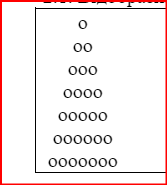
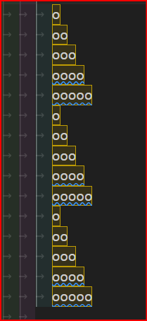

Вивести на екран
A B C D E
B C D E F
C D E F G
D E F G H
E F G H I
2.1. Відобразити трикутник за допомогою символів «о»
Побудувати ялинку
Інвестор вклав тис. грн на 20 років під 20% річних, а потім на 17 років під 27% річних. Визначити за допомогою циклів суму, яку він одержить.
клавіатури вводитяться числа поки не буде введено 0. Знайти добуток чисел.